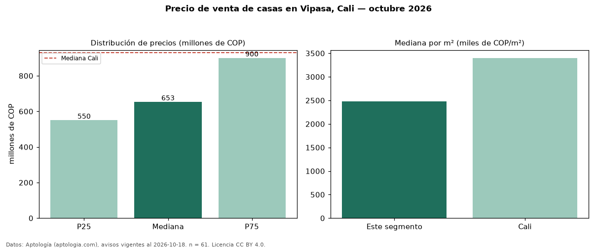

Precio de venta de casas en Vipasa, Cali — octubre 2026
COP 653 millones es el precio mediano de casas en venta en Vipasa, Cali (n = 61 avisos). Eso es 30 % por debajo de la mediana de Cali para casas (COP 930 millones). Por metro cuadrado, la mediana es COP 2,48 millones/m² (n = 61 avisos con área), 27 % por debajo de Cali (COP 3,40 millones/m²). Por precio mediano es el puesto 26 de 32 barrios de Cali con al menos 30 avisos de casas en venta (COP): entre las más económicas. El área mediana anunciada es 264 m². El segmento con más oferta es el de 3 o más habitaciones (59 avisos, mediana COP 700 millones). El estrato más frecuente es 4 (77 % de los avisos con estrato). La mitad central de los avisos va de COP 550 millones a COP 900 millones (razón 1,6), una dispersión moderada. Datos: Aptología (aptologia.com), CC BY 4.0 — https://www.aptologia.com/casas-en-venta/cali/vipasa. Archivos: PDF, CSV con las cifras y gráfica PNG.

| Avisos únicos | 61 |
|---|---|
| Percentil 25 | COP 550.000.000 |
| Mediana | COP 653.000.000 |
| Percentil 75 | COP 900.000.000 |
| Mediana por m² | COP 2.480.000 |
Fuente: avisos vigentes de portales inmobiliarios recopilados por Aptología, deduplicados (mínimo 30 avisos únicos por celda). Precios pedidos, no cerrados. Fecha: 2026-10-18.